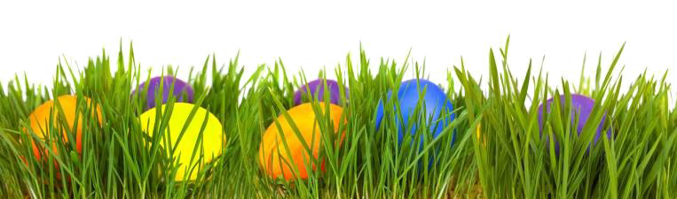

Velikonoce jsou den kdy se slaví Ježíš <3
Povídka 1: Ondra a velikonoční vajíčka
Ondra si chtěl najít vajíčka v lese. Našel mýtinu a velikou slepici, ale slepice ho uviděla a vyhnala. Ondra se styděl a uvědomil si, že si vajíčka nezaslouží. Doma našel košík plný vajíček od velikonočního zajíčka.
Povídka 2: Tomáš a velikonoční bohoslužba
Tomáš se nudil v kostele a dělal lumpárny. Starý muž se ho zeptal, co ho baví. Tomáš se zamyslel a uvědomil si, že nic. Muž mu vyprávěl příběh o Ježíšovi a Tomášovi se bohoslužba začala líbit.
Velikonoce jsou krásný svátek plný tradic a zvyků. Děti se můžou těšit na velikonoční vajíčka, beránka, pomlázku a kraslice. Ale Velikonoce nejsou jen o dárcích a zábavě. Je to také čas na to, abychom se zamysleli nad svým životem a udělali si čas na své blízké.
Velikonoce, svátek oslavující zmrtvýchvstání Ježíše Krista, pomalu doznívají. Zvony, které utichly na Velký pátek, se rozezněly a hlásí radostnou zprávu. Kostely se vyprázdnily, věřící se rozcházejí domů s pocitem naděje a víry. Na stolech se stále vyjímají kraslice a beránek, symbolizující nový život a plodnost. Děti si užívají pomlázku a sladké odměny. Atmosféra je veselá a sváteční, i když se pomalu vracíme do běžného rytmu života. Velikonoční svátky nám připomněly důležitost víry, lásky a naděje, které nás provázejí na cestě životem. I když pomalu odcházejí, jejich poselství zůstává v našich srdcích. Amen
